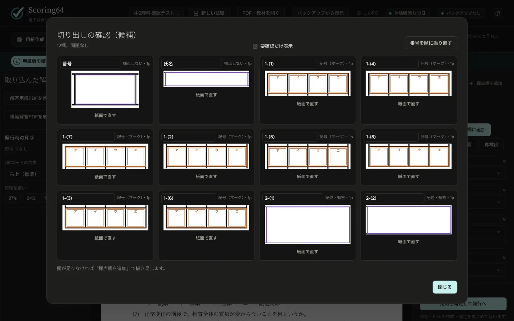
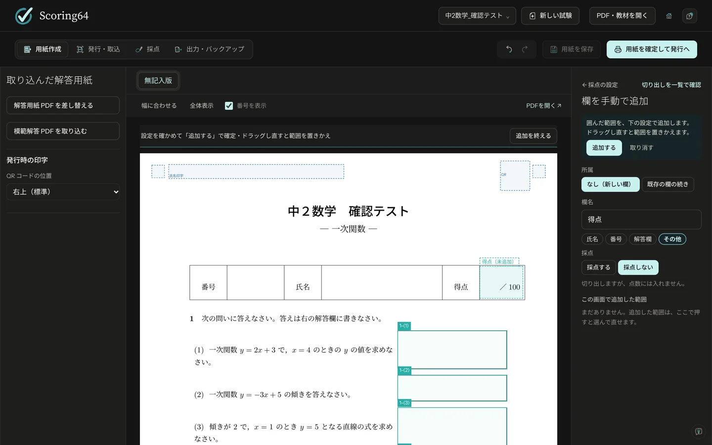
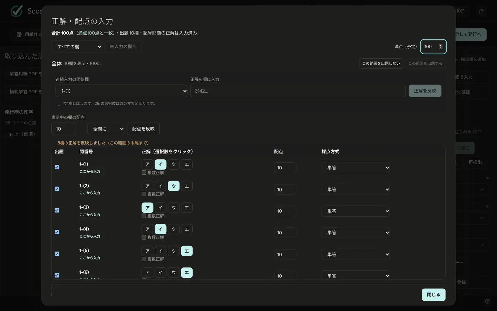
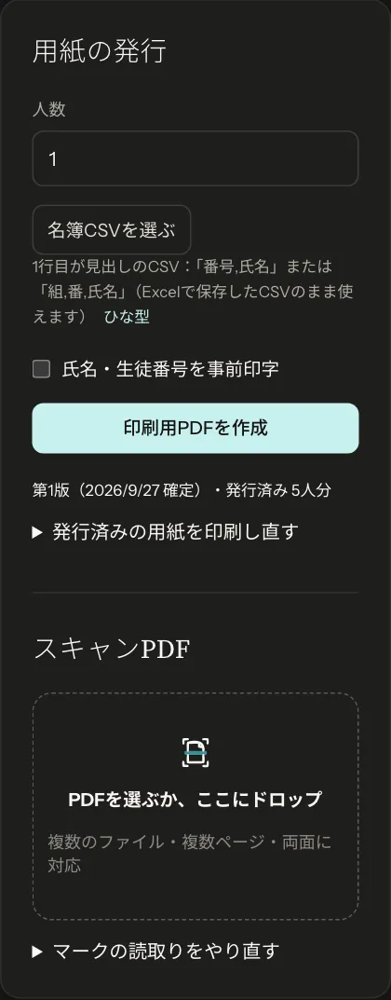
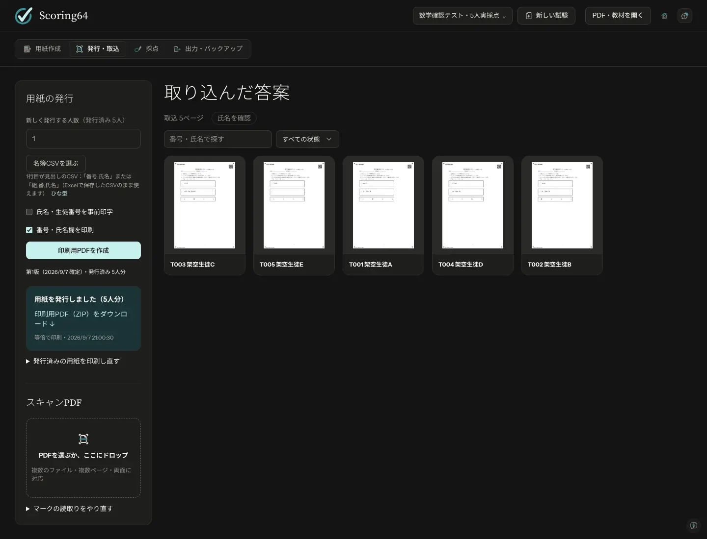
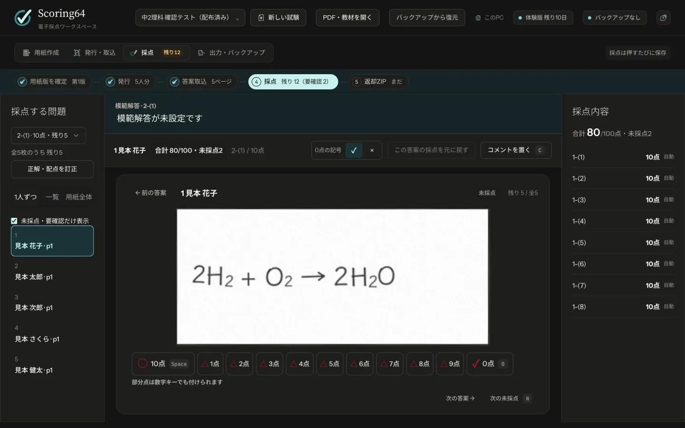
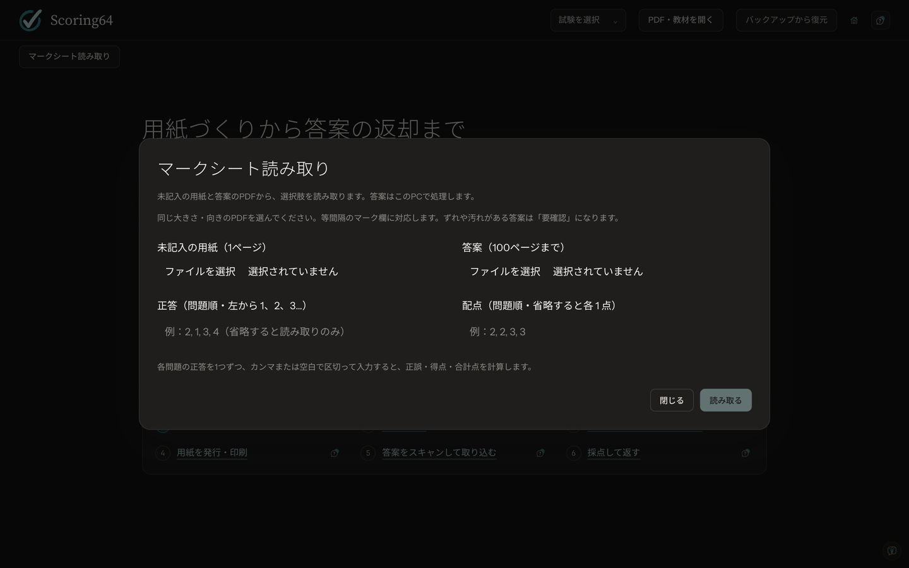

How to use
How to use Scoring64
Six steps, from preparing the sheet to handing back results. Each computer can grade 2 tests a month with every feature, written-answer grading and returned PDFs included. Work through the tabs at the top of the window from left to right.
The screenshots show the Japanese interface. Button names in the text are those of the English interface in version 1.2.0.
What you need
- Computer
- Windows 10 / 11 (64-bit), or a Mac with Apple silicon (M1 or later). Grading needs no internet connection (it is used only to check for updates and to set up TeX)
- Printer
- One that prints at actual size (100%)
- Scanner
- Your school's copier is fine, as long as it saves PDFs at 200–300 dpi
- Students' pencils
- Bubbles are filled in with a soft pencil (HB / No. 2, or B)
Step 01
Prepare the sheet
Use the Word or Excel worksheets you already have.
- In Word or Excel, choose File → Save As and save as PDF. If you only have paper, scan it to PDF at 300 dpi.
- Click Open PDF or material at the top and choose the PDF.
- Suggested answer boxes appear: purple for written answers, orange for choices.
- Check each suggestion. If one is wrong, click it and fix its type, number or area.
- Click Add accepted boxes, then Check all cut-outs to confirm each area.
Suggestions can miss a box or get one wrong, so always check them by eye. Draw any missing box with Add a box by hand in the right-hand panel (steps below).



Add a box by hand
- Click Add a box by hand in the right-hand panel.
- Drag over the page to draw the area. Drawing again replaces it.
- In the settings on the right, choose the Box name, Type (Name, No., Answer box or Other), whether to grade it, and what it Belongs to. For an answer that runs across pages or frames, choose Continues a box so it is graded as one question.
- Click Add. Draw again to add the next box, and click Done adding when you are finished.
Select a box and press Delete to remove it. Arrow keys move it; Shift + arrow keys resize it.
- Make choice boxes at least 7 mm (¼ in) square.
- Keep a 30 mm (1¼ in) square at the top right clear. A QR code is printed there.
- Make fill-in blanks at least 15 mm long.
You can also design sheets in the app (New exam). Sheet design uses TeX, which is free. If TeX is not installed, Scoring64 can set up a light or full version from New exam or the ? menu (this needs the internet the first time). Importing Word or Excel PDFs does not need TeX.
Designing a sheet in the app
- Click New exam, type a name and choose a starting sheet: Sheet with No. and Name boxes (selected first), Blank sheet, Start from a saved template or Copy an earlier exam. Sheets come in A4 and US Letter. Sheets for Japanese exams are listed last, under Japan-specific sheets.
- Click the page where you want something, then use + Add part to place answer boxes, text, maths, figures and more. Boxes go into the section shown under Add to; leave it on automatic or pick a section.
- Text and maths parts open an editing field right beside them. Half-written maths is kept.
- Numbers count on within each section. You can choose the Number enclosure, such as (1), for each box, and put part headings under a section.
- Drag across an empty part of the page to select every box it touches (Ctrl + A selects all; on a Mac use Command instead of Ctrl). Copy, cut and paste with Ctrl + C / X / V.
- Pick a font from the menu. Fonts installed on the computer are under More fonts.
- Keep a sheet you use often with Save as template.
You draw the page directly on screen; TeX checks the finished result in the background.


Step 02
Answer key and points
- Click Enter answer key and points as a list in the right-hand panel.
- For choice questions, click the correct choice. To enter many at once, click Type answers in a row, choose the first box, type the answers in order and click Fill in answers. An answer key in Excel can go in with Paste from Excel. For written questions, a model answer entered as the correct answer is shown above each student's answer while you grade.
- Choose the points and the grading method. Set the same points fills in equal points in one go. Enter Planned full marks at the top and Scoring64 shows whether the total matches.
- Click Confirm the sheet and go to printing at the top right. A checklist appears; click Save and confirm. Answers outside the choices and points that are not whole numbers are flagged here. Saving, making the print PDF and fixing the sheet version then run in turn.
Grading methods
| Grade by hand | Written answers. You grade them on screen |
|---|---|
| Single answer | One correct choice |
| All or nothing | Correct only if every box is right |
| Any order (partial credit) | Order does not matter; points for each one right |
| Any order, all or nothing | Order does not matter; all must be right |
| Everyone correct (e.g. a faulty question) | Full marks for everyone |


Step 03
Print the sheets
- On the Print & scan tab, enter the number of students. If you have a class list, load it with Choose roster CSV (the first row holds the headings
number,name). - To print each student's name on their sheet, tick Preprint names and student numbers.
- Click Make the print PDF and print it at actual size.
Each sheet gets a QR code at the top right and black squares in the corners. Scoring64 uses them to recognize the sheet when you import it.


- Fill the box in firmly with an HB or B pencil. Do not circle or tick (these are not read as answers and go to you for review).
- Erase changes cleanly.
Step 04
Scan and import the answer sheets
- Scan the answer sheets to PDF on your copier. A whole class in one PDF is fine.
- Choose or drop the PDFs into Scanned PDFs on the left. Several files and double-sided scans work; the QR codes put pages the right way up and in order.
- If anything is left to sort out, Pages to fix (unidentified pages, alignment failures, duplicates), See sheets with no answers yet or Check names appear above Imported answer sheets. Click them to check.
| Resolution | 200–300 dpi |
|---|---|
| Color | Color (or grayscale). Not black and white, which drops light pencil marks |
| Format | |
| Paper size | The same as when printed |


Step 05
Grade
To grade written answers with AI through Codex or Claude Code, see AI grading. It covers what you need and when answers are sent outside your computer.
Choice questions are graded automatically
On import, choice questions are graded by how dark the marks are. A clearly filled bubble counts as that choice; a question left blank counts as no answer. Faint or partial fills, two filled bubbles, heavy erasure marks, and circles or ticks instead of a fill are not decided automatically: they go to Needs review for you to decide.
Written questions, one at a time
- On the Grading tab, choose a question.
- Answers appear large, one student at a time. Click full marks (○), zero (✓) or Partial (△) at the bottom, and the next student comes up. On the keyboard: Space (or Enter) for full marks, X or 0 for zero, P for partial credit.
- Partial opens a keypad. Type a whole number from 0 to the question's points and press Confirm or Enter (Esc cancels). For questions worth 9 points or less, pressing a number key gives that score directly.
- To write on an answer, use Add a comment (C key).
If you find a mistake in the key or the points after handing out the test, fix it with Correct answer key and points. Every answer sheet is regraded, and scores you gave by hand are kept.


Step 06
Hand back and keep
- On the Export & backup tab, check that nothing is left to review.
- Click Make the return ZIP. It holds a marked PDF for each student and a scores CSV that opens in Excel.
The ZIP holds every student's paper. Give each student only their own PDF from the students folder.
Backup
Back up all exams saves every exam in one file (.scoring64). Make one each time you finish grading, and keep a copy somewhere else, such as a USB stick. To bring it back, use Restore from backup.

Free bubble sheet reading and grading
Click Bubble sheet reader on the first screen. Every feature is free for 2 tests a month. First choose a test or type a name for a new one; to add answer sheets to the same test, choose it again. The answer sheets are processed on this computer.
- Choose the blank sheet (a one-page PDF) and the PDF of answer sheets (up to 100 pages). Each PDF can be up to 20 MB, and all pages should have the same size and orientation.
- Click the top-left corner of the first bubble on the sheet, then enter the number of questions and choices, the horizontal and vertical spacing, and the bubble size, so the red frames sit on the bubbles. Evenly spaced bubbles are supported.
- Click Read. Choices are numbered 1, 2, 3… from the left. Compare answers marked as more than one bubble or Needs review with the sheets.
- Enter the answers and points in question order and click Read and grade to get right and wrong, scores and the total for each page. Save them with Results CSV. Pages that need review are still graded on the best reading, with the number of questions to review shown (questions with more than one mark, or no reading, get zero). Check those pages against the sheets, and do not treat their totals as final. Written-answer grading, gradebooks and returned PDFs follow the six steps above (and count toward the 2 free tests).

